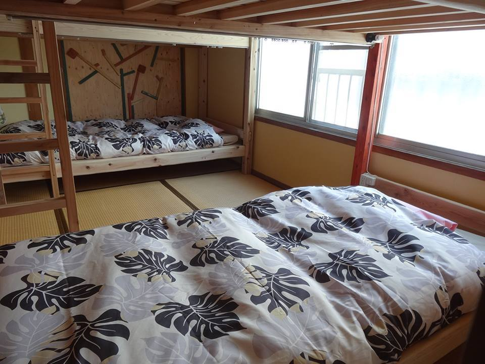
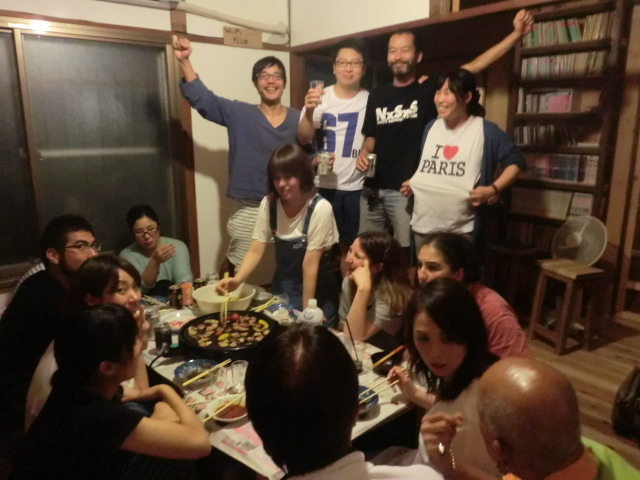
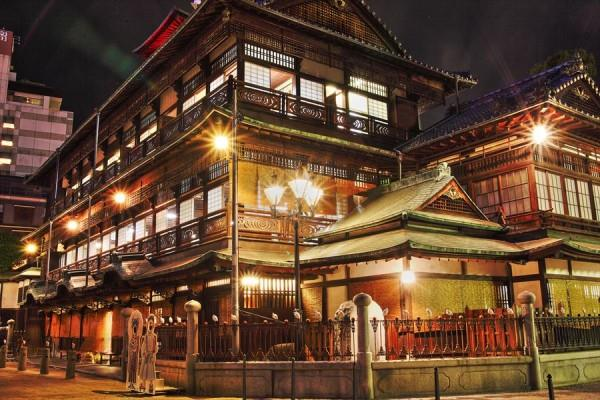
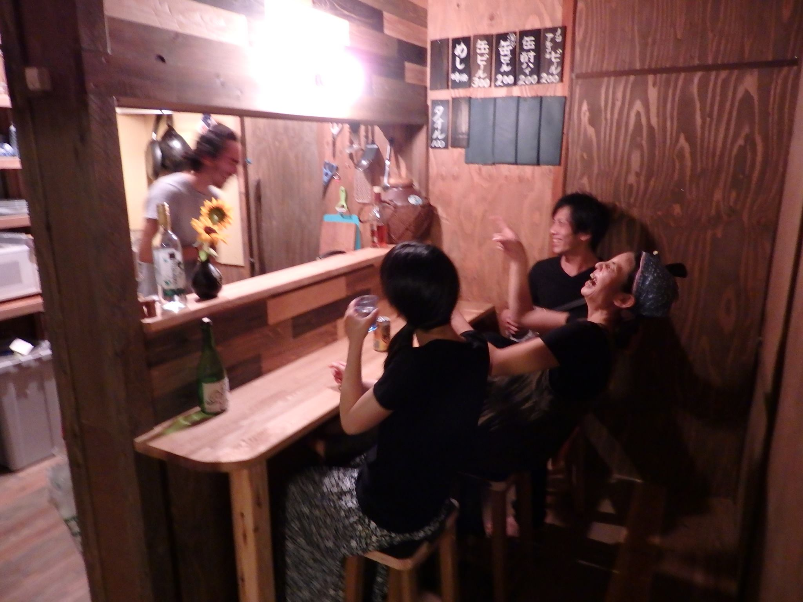
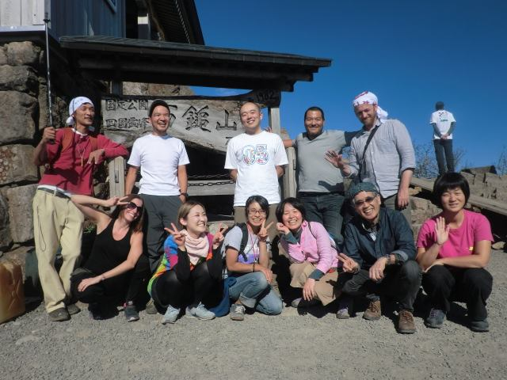
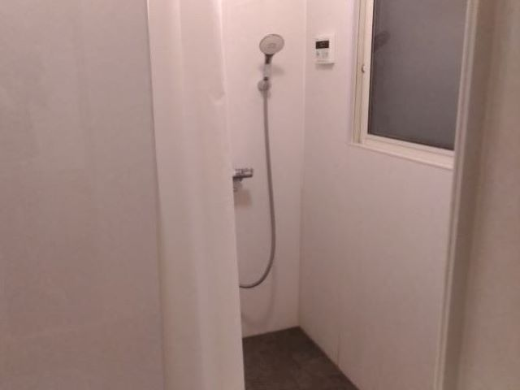
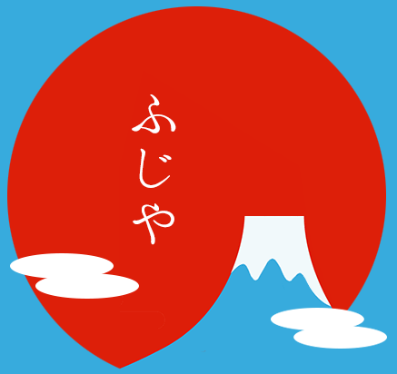

〒790-0842 愛媛県松山市道後湯之町7-23【MAP】

手作りのしっかりとしたベッドです。 ゆっくりお休みください。

みんなの集まるのんびりスペース。インターネット(wifi)もあります。利用無料です

道後温泉まで徒歩３分！ 道後温泉駅、商店街まで徒歩１分！！

冷蔵庫、レンジ、トースター、炊飯器、調味料 ご自由にお使いください。

時々みんなで外遊び♪ 山登り、自然農、釣り、廃校巡り等々 情報ありますよ！

シャワーのみ利用できます
※タオル・ソープ等はご持参ください
